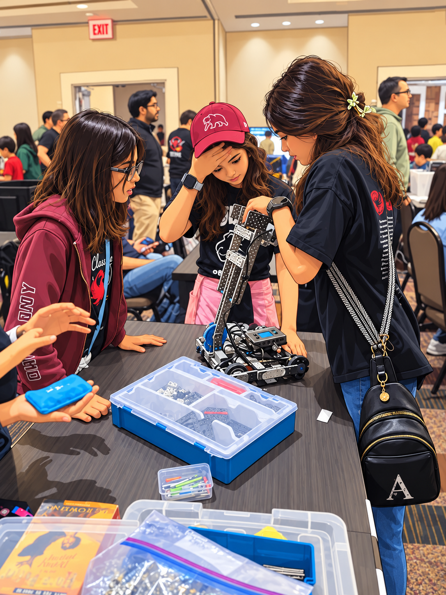

ROBOTICS NEWSLETTER #5 · OCTOBER 2026
Our First Competition — A Brilliant First Flop! 🤖
After nearly three months of building, programming, testing, and plenty of trial and error, our girls finally participated in their first VEX IQ robotics competition last weekend in Pleasanton! It was an exciting, humbling, chaotic, and ultimately very rewarding experience.
<img src="../images/competition-team-cartoon.png" alt="Robotics team with their competition robot">
From Flop to the Competition Floor
The girls successfully built and programmed Flop, the official VEX IQ competition Hero Bot. Getting a functional robot onto the competition floor was a milestone in itself!
But once we arrived, we quickly realized that building a working robot was only the entry point. Many of the other teams had significantly more sophisticated robots, with advanced intake mechanisms, lifts, and scoring capabilities. We had a long way to go!
What impressed us most was how the girls responded. Rather than getting discouraged, they kept experimenting and improvising throughout the competition. They rebuilt parts of the intake mechanism, adjusted the robot's weight distribution to correct its lopsided balance, and continued trying to make it work better between rounds.
We also had our share of coach lessons! At one point, the robot's code was accidentally wiped out, and without a backup, we had to make an emergency round trip home from Pleasanton to Palo Alto to retrieve it. That cost us a few points and taught us a lesson we won't forget: Always back up your code!
What We Learned
We finished near the bottom of the rankings, but our first competition gave us something invaluable: a much clearer understanding of what good competitive robotics looks like.
We came away with three priorities:
- Build a more robust robot. Improve the intake mechanism, balance, and ability to handle obstacles reliably.
- Practice smarter and score faster. Develop better driving control, real-time field strategy, and faster scoring cycles.
- Aim higher — literally! Add capabilities such as stable lifting and shooting mechanisms to reach higher-value goals.
Most importantly, the girls learned that engineering doesn't end when a robot is built. It's a continuous process of testing, discovering what doesn't work, and making it better.
BUILD → TEST → TROUBLESHOOT → MODIFY → TRY AGAIN

On to the Next Challenge!
We're already looking ahead to our next competition, tentatively targeting a Bay Area competitive event toward the end of January. The plan is to build on our existing robot and apply everything we've learned to the same game. We'll share the date and logistics later this week or next.
I was reminded of a wonderful line from the children's book Rosie Revere, Engineer:
“Your brilliant first flop was a raging success!
Come on, let’s get busy and on to the next!”
It couldn't be more appropriate — especially since our robot was literally named Flop! 😊
And Finally, Some Comic Relief! 😂
We had a good laugh today watching footage of our robot apparently deciding to practice yoga in the middle of the competition floor instead of scoring points!
And to prove that it wasn't all yoga, here's a video of one of our successful scoring attempts!
A big congratulations to all six girls for their perseverance, creativity, and willingness to keep trying. Our first competition may not have brought home points, but it gave us plenty of inspiration for the next one.
Onward and upward — quite literally, if we can get that lift working! 🚀